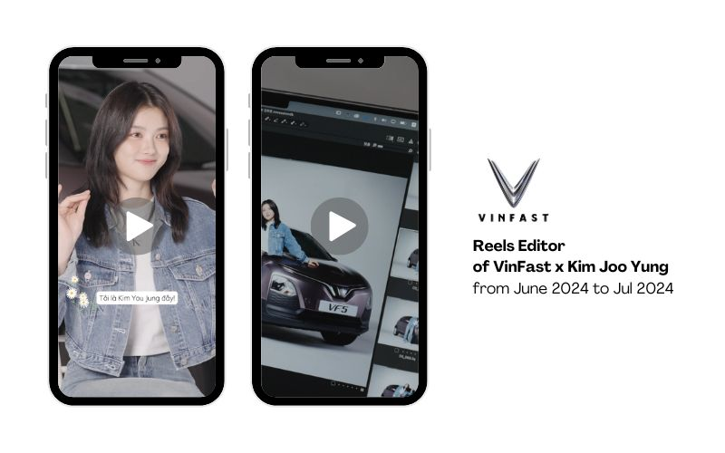
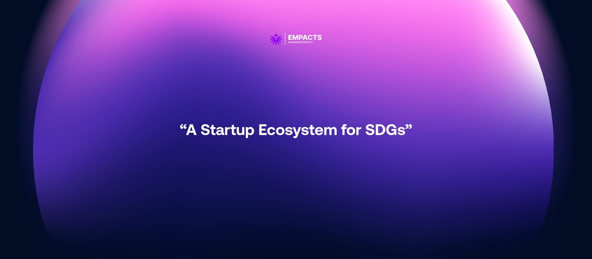
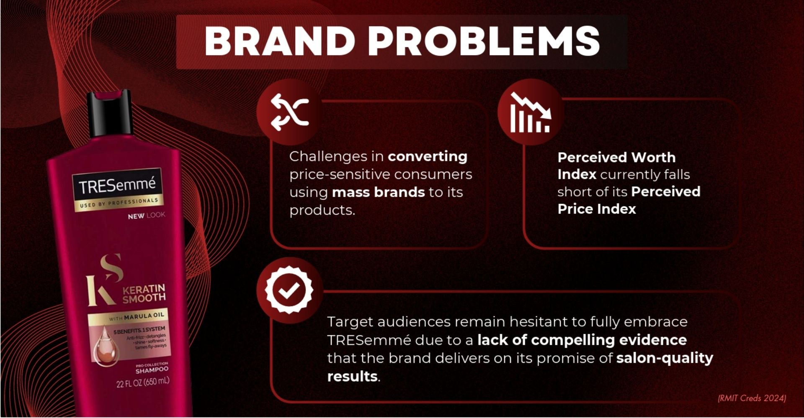
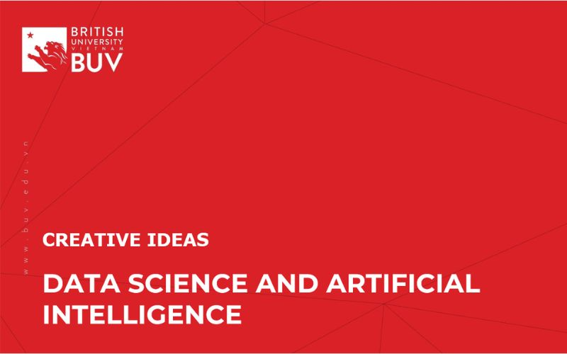

P28 · Commercial production support · 2024
VinFast × Kim Yoo-jung
Short-form contentOn-set executionDetailed case review next
Meaningful ideas, moved from insight to story to impact.
A portfolio across creative development, strategic planning, communication and sustainability, project management, live experiences and content. The common thread is turning ambiguity into something people can understand, use and carry forward.
Each feature case is chosen for a different kind of evidence: creative ownership, research depth, leadership, operating systems, production judgement or measurable delivery.









The work changes across a film treatment, media plan, exhibition or organisation. The discipline underneath it stays consistent.
Start with evidence, audience behaviour, constraints and what is actually unresolved. Avoid decorating the brief before understanding it.
Translate the tension into a story, strategy, experience journey or operating model that can be explained and challenged.
Turn the idea into something shootable, schedulable, measurable, handover-ready or useful beyond the presentation room.
These are not separate portfolio categories. They are recurring contexts where Felix tends to invest extra research, responsibility and attention.
Projects concerning sustainable development, ESG, CSR, social enterprise support and SDG-aligned entrepreneurship.
Heritage, collective memory and culturally grounded storytelling, especially when tradition has to meet contemporary formats.
Student rights, wellbeing, participation and social advocacy, with attention to risk and the responsibility behind public-facing work.
Graduating April 2027. Available full-time immediately for roles across creative development, strategy, sustainability communication, project management, events and content.